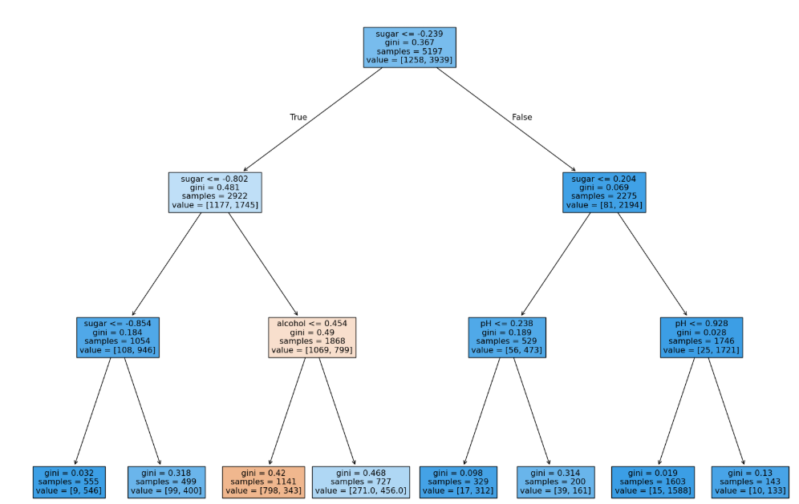

혼자 공부하는 머신러닝 05
1. 결정트리
레드 와인, 화이트 와인 표시가 누락된 상태에서
캔에 적힌 알코올 도수, 당도, pH값으로 구별하는 방법
## 로지스틱 회귀로 분류
import pandas as pd
wine = pd.read_csv('https://bit.ly/wine-date')
wine.info()
<class 'pandas.core.frame.DataFrame'>
RangeIndex: 6497 entries, 0 to 6496
Data columns (total 4 columns):
# Column Non-Null Count Dtype
--- ------ -------------- -----
0 alcohol 6497 non-null float64
1 sugar 6497 non-null float64
2 pH 6497 non-null float64
3 class 6497 non-null float64
dtypes: float64(4)
### class가 0이면 레드 와인, 1이면 화이트 와인
data = wine.iloc[:,:-1].to_numpy()
target= wine['class'].to_numpy()
from sklearn.model_selection import train_test_split
train_input, test_input, train_target, test_target = train_test_split(
data, target, test_size=0.2, random_state=42
)
print(train_input.shape, test_input.shape) #(5197, 3) (1300, 3)
from sklearn.preprocessing import StandardScaler
ss = StandardScaler()
ss.fit(train_input)
train_scaled = ss.transform(train_input)
test_scaled = ss.transform(test_input)
from sklearn.linear_model import LogisticRegression
lr = LogisticRegression()
lr.fit(train_scaled, train_target)
print(lr.score(train_scaled, train_target)) #0.7808350971714451
print(lr.score(test_scaled, test_target)) #0.7776923076923077
print(lr.coef_, lr.intercept_) #[[ 0.51268071 1.67335441 -0.68775646]] [1.81773456] 데이터는 알콜, 설탕, pH
print(lr.classes_) #[0. 1.] 0이면 레드 와인, 1이면 화이트 와인
로지스틱 분류 결과로 볼 때 알콜 도수, 당도가 높으면 화이트 와인일 확률이 높고 pH가 높을 수록 레드 와인이 될 확률이 높음
하지만 설명하기가 어려움 coef_, intercept 결과가 직관적이지 않음
다항 특성을 추가하면 더 설명하기 어려움
이런 문제를 해결하기 위한 결정 트리
from sklearn.tree import DecisionTreeClassifier
dt = DecisionTreeClassifier(random_state=42)
dt.fit(train_scaled, train_target)
print(dt.score(train_scaled, train_target)) #0.996921300750433
print(dt.score(test_scaled, test_target)) #0.8592307692307692
import matplotlib.pyplot as plt
from sklearn.tree import plot_tree
plt.figure(figsize=(10,7))
plot_tree(dt)
plt.show()
max_depth를 설정하지 않을 경우 끝까지 감
.
.
plt.figure(figsize=(10,7))
plot_tree(dt, max_depth=1, filled=True, feature_names=['alcohol','sugar','pH'])
##filled = True를 하면 양성 클래스를 파랑색으로 칠해줌
plt.show()
.
.
## 가지치기
dt = DecisionTreeClassifier(max_depth=3, random_state=42)
dt.fit(train_scaled, train_target)
plt.figure(figsize=(20,15))
plot_tree(dt, filled =True, feature_names=['alcohol','sugar','pH'])
plt.show()
#색이 진할수록 양성 클래스가 모여있음

.
.
#스케일 조정을 하지 않고 사용 -> 특성값이 원본 데이터 값으로 나와서 이해하기 쉬움
dt.fit(train_input, train_target)
plt.figure(figsize=(20,15))
plot_tree(dt, filled =True, feature_names=['alcohol','sugar','pH'])
plt.show()
## sugar가 1.625보다 크고 alcohol은 11.025보다 작거나 같으면 레드와인 (레드 와인이 음성 클래스)
.
.
2. 교차 검증
지금까지 훈련 세트에서 모델을 훈련하고 테스트 세트에서 모델을 평가해왔음.
테스트 세트에서 얻은 점수를 토대로 실전에 투입 시 이 정도 성능을 기대할 수 있다고 가늠.
하지만 테스트 세트를 사용해 성능을 확인하다 보면 점점 테스트 세트에 맞추게 되는 셈.
테스트 세트로 일반화 성능을 올바르게 예측하려면, 가능한 한 테스트 세트를 사용하면 안됨.
테스트 세트를 사용하지 않고 모델이 과대적합인지 과소적합인지 판단하기 위한 간단한 방법은 훈련 세트를 다시 나누는 것.
이것을 검증 세트라고 부름.
### 검증 세트
import pandas as pd
wine =pd.read_csv('https://bit.ly/wine-date')
data=wine[['alcohol','sugar','pH']].to_numpy()
target = wine['class'].to_numpy()
from sklearn.model_selection import train_test_split
train_input, test_input, train_target, test_target = train_test_split(
data, target, test_size=0.2, random_state=42
)
sub_input, val_input, sub_target, val_target= train_test_split(
train_input, train_target, test_size=0.2, random_state=42
)
print(sub_input.shape, val_input.shape) #(4157, 3) (1040, 3)
처음 훈련 세트는 5,197개였는데 sub_input을 보면 4,157개로 줄었고 1,040개의 검증 세트가 추가됨.
이렇게 만들어진 sub_input, sub_target, val_input, val_target으로 모델을 만들고 평가.
from sklearn.tree import DecisionTreeClassifier
dt = DecisionTreeClassifier(random_state=42)
dt.fit(sub_input, sub_target)
print(dt.score(sub_input, sub_target)) #훈련세트 0.9971133028626413
print(dt.score(val_input, val_target)) #검증세트 0.864423076923077
### 과대적합 -> 매개변수를 바꿔서 더 좋은 모델을 찾아야 함
.
.
## 교차 검증
from sklearn.model_selection import cross_validate
scores = cross_validate(dt, train_input, train_target)
print(scores)
{'fit_time': array([0.00384617, 0.004076 , 0.00372863, 0.00412512, 0.00351977]), 'score_time': array([0.0004847 , 0.000494 , 0.00043845, 0.00048184, 0.00041032]), 'test_score': array([0.86923077, 0.84615385, 0.87680462, 0.84889317, 0.83541867])}
#교차 검증의 최종 점수는 test_score 키에 담긴 5개 점수의 평균
import numpy as np
print(np.mean(scores['test_score'])) #0.855300214703487
보통 5-폴드 교차 검증이나 10-폴드 교차 검증을 많이 사용.
train_test_split() 함수로 전체 데이터를 섞은 후 훈련 세트를 준비했기 때문에 따로 섞을 필요는 없음.
혹시 교차 검증을 할 때 훈련 세트를 섞으려면 분할기를 지정.
#회귀 모델일 경우 KFold 분할기 사용, 분륨 모델일 경우 StratifiedKFold 사용
from sklearn.model_selection import StratifiedKFold
scores = cross_validate(dt, train_input, train_target, cv=StratifiedKFold())
print(np.mean(scores['test_score'])) #0.855300214703487
## 10폴드 교차 검증
splitter = StratifiedKFold(n_splits=10, shuffle=True, random_state=42)
scores= cross_validate(dt, train_input, train_target, cv=splitter)
print(np.mean(scores['test_score'])) #0.8574181117533719
.
.
3. 하이퍼파라미터 튜닝 - 그리드 서치
모델이 학습할 수 없어서 사용자가 지정해야만 하는 파라미터 : 하이퍼파라미터
라이브러리의 기본값으로 훈련 후 검증 세트 점수를 보면서 매개변수 조금씩 바꾸기
max_depth 최적값과 min_samples_split 매개변수는 같이 움직이므로, 두 매개변수를 동시에 바꿔가며 최적의 값을 찾아야 함.
사이킷런에서는 그리드 서치 클래스가 해줌.
from sklearn.model_selection import GridSearchCV
params = {'min_impurity_decrease':[0.0001, 0.0002, 0.0003, 0.0004, 0.0005]}
gs = GridSearchCV(DecisionTreeClassifier(random_state=42), params, n_jobs=-1)
#n_jobs : 병렬 실행에 사용할 CPU 코어 수. 기본값1, -1은 모든 코어 사용
gs.fit(train_input, train_target)
## 최적의 하이퍼파라미터를 찾으면 자동으로 훈련 세트 만들어줌
dt = gs.best_estimator_
print(dt.score(train_input, train_target)) #0.9615162593804117
print(gs.best_params_) #뭐가 제일 좋았는지도 확인 가능
#{'min_impurity_decrease': 0.0001}
print(gs.cv_results_['mean_test_score'])
#[0.86819297 0.86453617 0.86492226 0.86780891 0.86761605]
넘파이 argmax() 함수를 사용하면 가장 큰 값의 인덱스 확인 가능
params 키에 저장된 매개변수 중 최상의 검증 점수를 만든 매개변수 조합 확인 가능
best_index = np.argmax(gs.cv_results_['mean_test_score'])
print(gs.cv_results_['params'][best_index])
#{'min_impurity_decrease': 0.0001}
.
훈련 세트 조합보다 더 복잡한 매개변수 조합 확인해보기
결정 트리에서 min_impurity_decrease는 노드를 분할하기 위한 불순도 감소 최소량을 지정.
여기에 max_depth로 트리 깊이를 제한하고 min_samples_split으로 노드를 나누기 위한 최소 샘플 수도 지정.
params ={
'min_impurity_decrease' : np.arange(0.0001, 0.001, 0.0001), #0.0001에서 0.001이 될 때까지 0.0001씩 더하는 range
'max_depth' : range(5,20, 1), #5에서 20까지 1씩 증가하는 15개
'min_samples_split' : range(2, 100, 10) #2에서 100까지 10씩 더해가며 10개의 값
}
## 9 x 15 x 10 = 1,350개의 교차 검증 횟수
gs = GridSearchCV(DecisionTreeClassifier(random_state=42), params, n_jobs=-1)
gs.fit(train_input, train_target)
print(gs.best_params_)
{'max_depth': 14, 'min_impurity_decrease': np.float64(0.0004), 'min_samples_split': 12}
print(np.max(gs.cv_results_['mean_test_score']))
#0.8683865773302731
min_impurity_decrease, max_depth 등 매개변수 간격을 임의로 정했는데 더 좋은 방법이 있다.
.
.
4. 랜덤 서치
from scipy.stats import uniform, randint
# uniform은 정해진 범위에서 실수 값을 고르게 뽑음
# randint는 정수
params ={
'min_impurity_decrease' : uniform(0.0001, 0.001),
'max_depth' : randint(20,50),
'min_samples_split' : randint(2,25),
'min_samples_leaf' : randint(1,25)
}
from sklearn.model_selection import RandomizedSearchCV
gs = RandomizedSearchCV(DecisionTreeClassifier(random_state=42),
params,
n_iter=100,
n_jobs=-1, random_state=42)
gs.fit(train_input, train_target)
print(gs.best_params_)
{'max_depth': 39, 'min_impurity_decrease': np.float64(0.00034102546602601173), 'min_samples_leaf': 7, 'min_samples_split': 13}
print(np.max(gs.cv_results_['mean_test_score']))
#0.8695428296438884
dt = gs.best_estimator_
print(dt.score(test_input, test_target))
#0.86
테스트 세트 점수는 검증 세트 점수보다 조금 작은 것이 일반적.